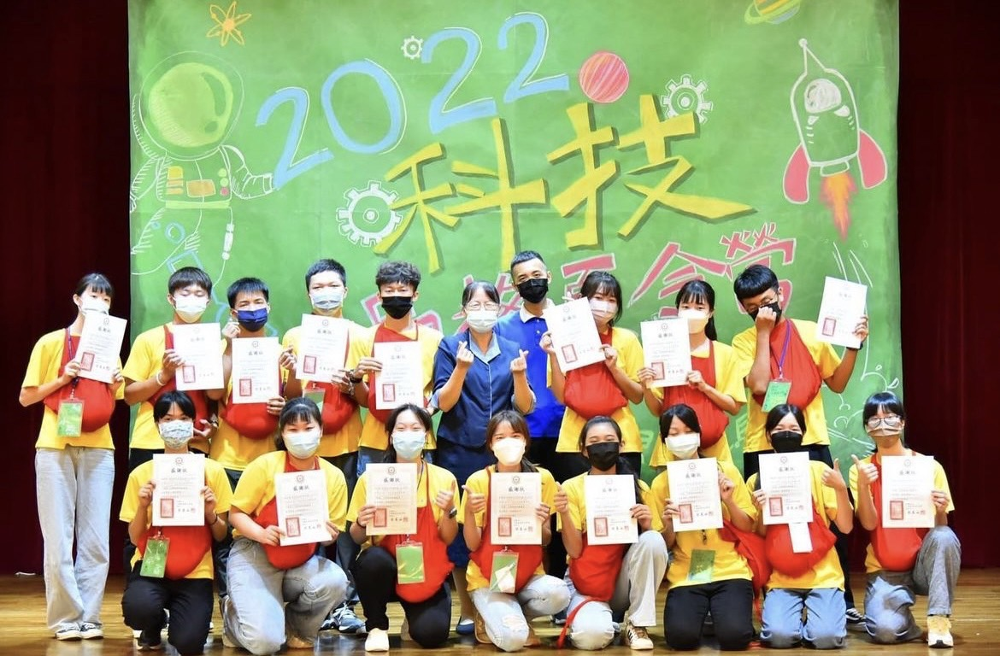
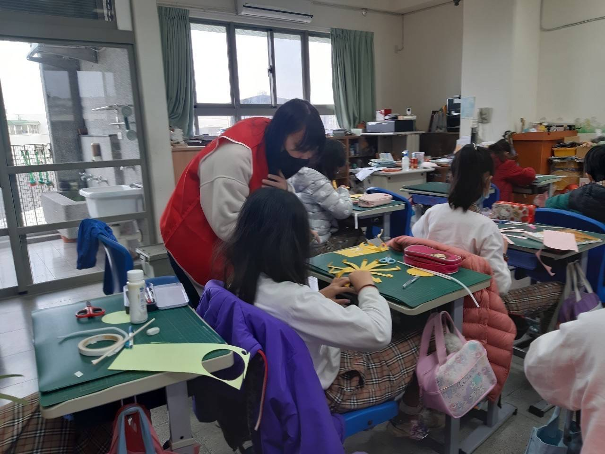
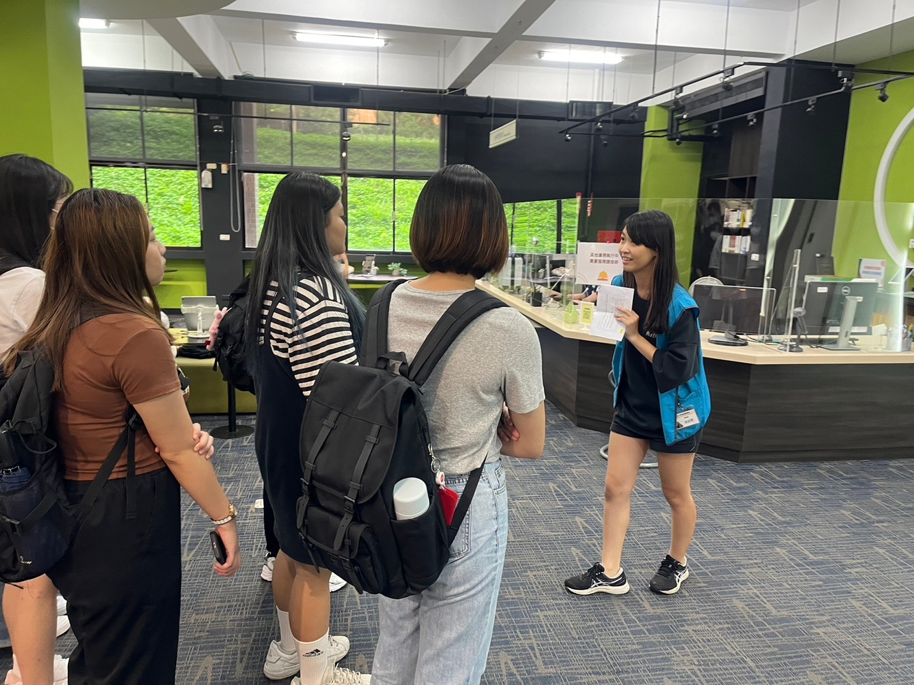
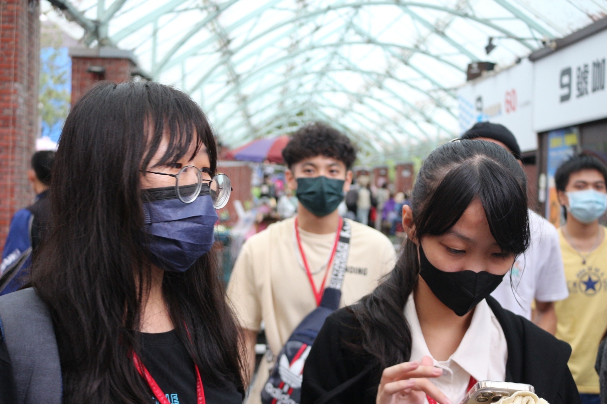
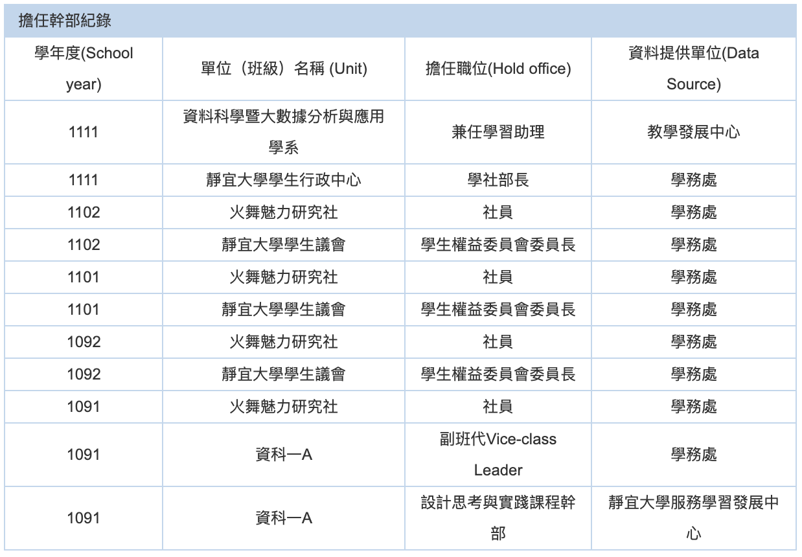
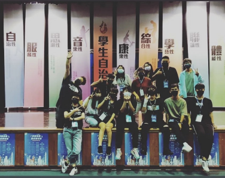
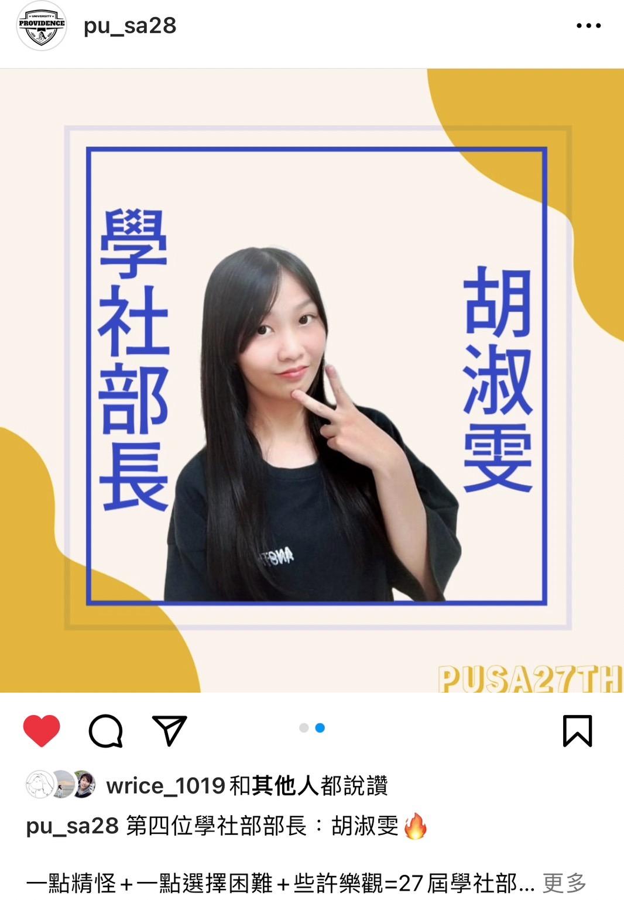
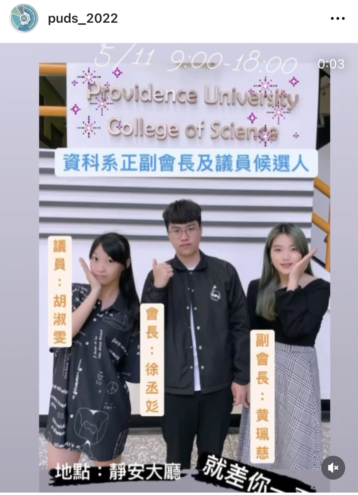
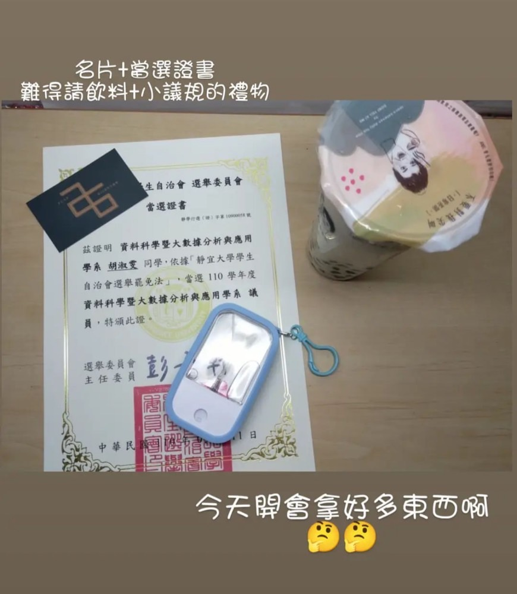

家庭背景
到不同地區生活
出生
高雄內門
高中
高雄楠梓
大學
台中沙鹿
實習
桃園楊梅
高雄人，家中四人，我媽媽是新住民，姊姊今年大學畢業，爸爸跟姊姊身體不好，都領有身心障礙手冊，希望自己以後能為家庭出一分力，減少家庭負擔。
以前參加過演說競賽，因此在面對他人自己能自然交流和展現自信，也喜歡嘗試各種事務活動，像是志工活動、舉辦活動、參加營隊、研習.....等。
高中搬離開家讀書培養自主性。
學習歷程
高中：希歡參與學校志工活動，希望自己的生活豐富，參與活動時喜歡觀察人的行為，去思考人們選擇的意義，因此對於分析感興趣。
大學：想充實生活，參加了不少學校活動(主辦、協辦、志工..等)，除了保持一定的學業成績，也對於有興趣的統計和程式方面自己多花時間去加強學習，每分析報告，都清楚每一步流程，這份認真得到了老師的欣賞，擔任老師的研究計劃助理，讓我有更多有機會去學習。
大學：想充實生活，參加了不少學校活動(主辦、協辦、志工..等)，除了保持一定的學業成績，也對於有興趣的統計和程式方面自己多花時間去加強學習，每分析報告，都清楚每一步流程，這份認真得到了老師的欣賞，擔任老師的研究計劃助理，讓我有更多有機會去學習。
研究/實習
大三時，跟著李名鏞老師做「 校友對學校的滿意度調查」，運用了Duncan 事後比較法，找出顯著差異。
大四以實習為主，目的想要了解自身的自我學習能力和業界之中的團隊合作與校園的差異，這分工作強調自主學能力，在工作中認識了ＳＥＯ，自我學習相關的內容並期許自已通過相關證照檢定。
大四以實習為主，目的想要了解自身的自我學習能力和業界之中的團隊合作與校園的差異，這分工作強調自主學能力，在工作中認識了ＳＥＯ，自我學習相關的內容並期許自已通過相關證照檢定。
就讀動機
自己想從事數據分析這項工作，但是依照現在學歷只能找到有關於ＳＥＯ的工作，為了有更專業的分析技才能完成初衷，所以想考取研究所。
競賽研習
2022 統計科學營
時間：2022.8.25~26
地點：中研院
性質：培訓
佐證資料：研習證書
地點：中研院
性質：培訓
佐證資料：研習證書

營隊志工
2022 科技品格夏令營
時間：2022.7.18~22
地點：中華經典研究會
職位：營隊隊輔
佐證資料：研習證書
地點：中華經典研究會
職位：營隊隊輔
佐證資料：研習證書
30字心得。30字心得。30字心得。30字心得。30字心得。30字心得。30字心得。30字心得。30字心得。

30字心得。30字心得。30字心得。30字心得。30字心得。30字心得。30字心得。30字心得。30字心得。
中小服務
時間：2022.4
地點：台中 北勢國小
職位：社團志工
佐證資料：志工證明
地點：台中 北勢國小
職位：社團志工
佐證資料：志工證明
30字心得。30字心得。30字心得。30字心得。30字心得。30字心得。30字心得。30字心得。30字心得。

30字心得。30字心得。30字心得。30字心得。30字心得。30字心得。30字心得。30字心得。30字心得。
蓋夏圖書館 導覽員
時間：2023.9.21
地點：靜宜 蓋夏圖書館
職位：導覽人員
佐證資料：服務證書
地點：靜宜 蓋夏圖書館
職位：導覽人員
佐證資料：服務證書
30字心得。30字心得。30字心得。30字心得。30字心得。30字心得。30字心得。30字心得。30字心得。

30字心得。30字心得。30字心得。30字心得。30字心得。30字心得。30字心得。30字心得。30字心得。
2022北部大學博覽會
時間：2022.3.5~6
地點：台大綜合體育館
職位：資科系志工
佐證資料：志工證明
地點：台大綜合體育館
職位：資科系志工
佐證資料：志工證明
30字心得。30字心得。30字心得。30字心得。30字心得。30字心得。30字心得。30字心得。30字心得。

30字心得。30字心得。30字心得。30字心得。30字心得。30字心得。30字心得。30字心得。30字心得。
111-1心靈成長營
時間：2022.10.15~16
地點：宜蘭聖母山莊
職位：營隊隊輔＋工作人員
佐證資料：證書
地點：宜蘭聖母山莊
職位：營隊隊輔＋工作人員
佐證資料：證書
30字心得。30字心得。30字心得。30字心得。30字心得。30字心得。30字心得。30字心得。30字心得。

30字心得。30字心得。30字心得。30字心得。30字心得。30字心得。30字心得。30字心得。30字心得。
幹部經歷
109
副班代
110
學生議員
110
宿舍幹部
111-1
學社部長

學生會

110宿舍幹部
IG source: leggo940

學生會 學社部長
IG source:pu_sa28

110 學生議會-資科
IG source:puds_2022

110 學生議會

活動總召
大學社團
企業實習
幔氏布緹有限公司
---公司簡介---
【MSBT 幔室布緹】織品窗簾家飾公司,累積多年經營歐、亞之間紡織家飾成品貿易
的經驗,熟知歐洲室內裝潢趨勢與流行脈動。於 2010 年 5 月成立「幔室布緹有限公
司 Maison Boutique Co., Ltd.」,期望運用豐富多元的後台資源,引進各式變化的
窗簾產品,由年輕的團隊主導經營,服務追求歐系時尚窗飾的消費大眾。
地址:326桃園市楊梅區楊湖路一段367巷15-1號
電話:03-4880250
信箱:service@msbt.com.tw
---公司簡介---
1.初期
- 照著新官網模版開發網頁
- HTML+CSS熟悉後，就是JavaScript效果
- 除了原生JS還有jquery語法
- 前端與後端伺服器溝通的技術AJAX
2.現在
換成WooCommerce+Porto主題來製作，每周都有1~2次頁面製作教學，也會參加公司的定時會議，有時也有講座。
-----實習動機-----
1.桃園環境
有親戚住在桃園八德區，大學同學剛好有住在楊梅區的，所以這個地方不會太過於陌生。
2.公司
當時面試時，面試官(之後要負責帶領我工作的工程師)說了一句:「 這間公司的網路跟前後端主要都是我負責的。」，心想如果錄取，我一定會選擇這間公司，因為這位工程師能力精煉，可以學到很多。
除了基礎的前端之外，可能能接觸到自己較薄弱的後端(當時前後端都有在招人)。
除了基礎的前端之外，可能能接觸到自己較薄弱的後端(當時前後端都有在招人)。
3.自我考量
- 當時認為數據分析要會後端，而後端要會一點前端基礎。
- 當時找的數據分析工作多數也是網頁前端。
- 累積業界的工作經驗。
- 想學職場溝通技巧與團隊合作。
- 想知道自己的能力跟面對工作的責任心。
入職
我的網頁開發能力並不是多精熟，而公司招募這個職位主要要有「 自主學習能力」而我因:
1.參與多項活動：
代表我是個願意付出時間精神去完成事務的人
2.排名優秀且大學三年已完成必要學分：
證明一定的學習能力，且可以專心實習而錄取
起初
工程師預計三天完成網頁，而我卻用了一周，自己有些慚愧，並努力提升專業能力。
聽了主管跟公司姐姐的建議，開始改善做筆記的習慣跟寫工作紀錄的方式，第二次寫網頁模板有在預定的時間完成。
教學方式
-遇到不會再去請教工程師
＊能自己去思考評估作法是否合適恰當，要有自己的想法，而不是一味照要求做。
當時大約三天~一周的時間學一種語法跟會運用。
其他
一開始開會，看著前輩們報告工作內容，觀察他們的談吐及了解他們所說的內容。學習使用淺顯易懂的詞語表達，讓他人能清楚了解跟展示做法跟問題，訓練表達能力。
總結
現今SEO十分受重視，自己未進公司前沒接觸到這類的內容，而前端對於SEO很重要，自己也盡快去了解跟學習相關概念。